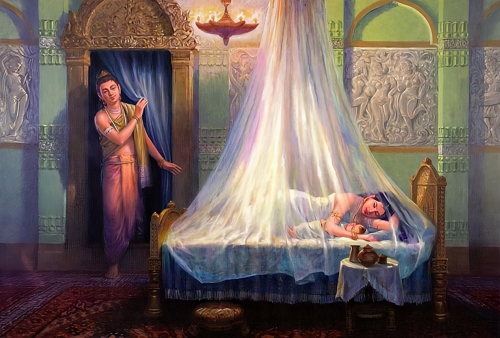
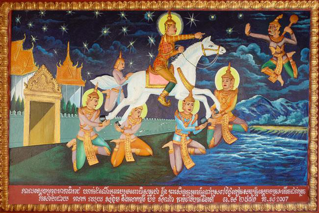
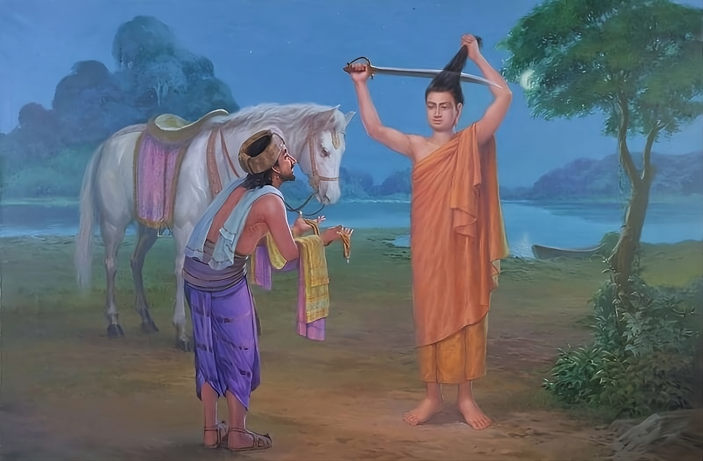

Namo tassa bhagavato arahato sammāsambuddhassa
Homage to the Most Venerable One, the Arhat, the Self-Awakened One
Namo tassa bhagavato arahato sammāsambuddhassa
Homage to the Most Venerable One, the Arhat, the Self-Awakened One
Namo tassa bhagavato arahato sammāsambuddhassa
Homage to the Most Venerable One, the Arhat, the Self-Awakened One
Sabbapāpassa akaraṇaṃ,
Do no evil
Kusalassa upasampadā ;
Accumulate good things
Sacitta pariyo dapanaṃ,
Encourage your mind to comprehend
Etaṃ buddhāna sāsanaṃ
This is Buddha's teaching.
In the picture, you can see Siddhartha deciding to take a look at his newborn son on the night before his renunciation.
Siddhartha spent the whole day in the royal garden, enjoying his bath. After his bath, as the sun began to set, he sat down on a large flat stone. At that moment, he felt the desire to be dressed in festive, beautiful clothes. Sakka, hearing of his desire, sent the deva Visakkamma, who, disguised as a servant in the service of the raja, approached Siddhartha and dressed him in festive clothes and ornaments.
While the musicians were entertaining him with the five kinds of musical instruments, and others were singing and dancing, and even while the Brahmins were praising him with the sweet words, "May your majesty be crowned with success, free from all kinds of danger and hostility; may glory and happiness bless you," Siddhartha, clad in the five ornaments, mounted the royal chariot to return to the palace.
At that moment, Raja Suddhodana received the news that Yasodhara had given birth to a son. So he sent messengers to Siddhartha with the joyful news: "Convey this good news to my son." When Siddhartha heard the news that his son had been born, the thought arose in him, as befits one who maintains in his mind a sense of spiritual urgency (saṁvega): "The asura Rahu, who will capture and hold me captive, has been born; great bondage has arisen!" Siddhartha spoke these thoughts out loud.
When Raja Suddhodana asked, "What did my son say?" the messengers told him the words spoken by Siddhartha. Then the Raja announced the name and title of his grandson thus: "Henceforth my grandson will be known by the name Rahula."
Siddhattha entered the capital Kapilavatthu, riding on a chariot with a large escort. As he was thus entering the city, Kisa Gotami, who was of great charm and beauty and came from a high noble line of the Shakyas, saw Siddhattha from the balcony of her residence, and feeling joy, expressed her feelings of joy as follows:
Nibbutā nūna sā mātā, nibbutā nūna so pitā,
nibbutā nūna sā nārī, yassāyaṁ īdiso pa
Peaceful and happy will be the mind of that fortunate mother who has given birth to such a son, possessing the splendor of the rising sun, an extraordinary son of noble birth.
Peaceful and happy will be the mind of that fortunate father who has brought into the world such a son, possessing the splendor of the rising sun, an extraordinary son of noble birth.
Calm and happy will be the mind of that fortunate woman, the wife of such a husband, filled with courage, possessing the splendor of the rising sun.
When oil is poured into a pot and when it is filled to the brim, the oil overflows. Similarly, when one experiences intense joy and satisfaction for some reason, that feeling of joy and satisfaction (pīti-somanassa) becomes as if full within and overflows. The outpouring of such a feeling of joy and satisfaction, expressed in the form of verse (gāthā) or in the form of prose (cuṇṇa), is called sublime utterance (udāna), the expression of intense joy.
Hearing the joyful utterance of Kisa Gotami, Siddhattha thought: “This cousin of mine, Kisa Gotami, has uttered a joyful utterance that the sight of such a person (atta-bhāva) will bring joy and peace to mother, father and wife. But what, indeed, can bring peace to the mind?” Then the following occurred to Siddhattha: “True peace comes only when the fire of passion (rāga) is extinguished; true peace comes only when the fire of hatred (dosa) is extinguished; true peace comes only when the fire of delusion (moha) is extinguished; true peace comes only when the heat of vanity (māna) is extinguished. Kisa Gotami has spoken pleasant words about the element of peace. But I am one who seeks the Supreme Peace, which is the true extinction of all suffering. Today I must renounce worldly life and become a hermit in order to find this peace.”
With this thought of renunciation arising in his mind, Siddhattha said, “Let this pearl necklace be the payment to Kisa Gotami for reminding me to go in search of the element of extinction (nibbuta),” and he took from his neck a pearl necklace worth 100,000 and sent it to Kisa Gotami. Kisa Gotami was overjoyed, thinking, “This cousin of mine, Siddhattha, has sent me a gift because his thoughts are inclined towards me.”
Siddhattha climbed the stairs to the palace, which was exquisite, a delight to live in, and lay down on a luxurious bed. As he lay down, all the female attendants of the palace and the dancers, who were of extraordinary beauty and grace, gathered around him with five kinds of musical instruments in their hands and began to play, dance and sing so that he could enjoy the five kinds of sensual pleasures. But, disgusted by activities that could kindle the fire of defilements, he found no interest in such entertainment and soon fell asleep.
As soon as the prince fell asleep instantly, the female attendants and dancers thought, "We dance, sing and play music for the prince, but he has fallen asleep. Why should we tire ourselves now?" - and they too fell asleep, hugging the musical instruments. The aromatic lamps illuminated the hall with a dim, warm light.
Upon awakening, the prince sat cross-legged on the couch and looked around. He saw the dancing girls sleeping, some of them clutching musical instruments and placing them under them. Saliva was flowing from their mouths, staining their cheeks and bodies, some were grinding their teeth, some were snoring, some were muttering, some were lying with their mouths open, some were naked, some had their hair loose and matted. They looked like a heap of disgusting dead bodies in a cemetery. Seeing these repulsive changes in the dancers, Siddhattha became even more distant from the objects of sensual pleasure.
This royal palace, full of pomp and splendor, comparable to the palace of Vejayanta, the residence of Sakka, is indeed like a cemetery where the dead are disposed of. The three planes of existence, namely, the sense sphere (kāmāvacara), the form spheres (rūpāvacara), and the formless spheres (arūpāvacara), are truly like a large house engulfed in a deep red, blazing fire. These sentient beings, men, Devas, and Brahmas, are destined for birth, old age, disease, and then death; after death they must again be born; then again grow old, become ill, and die. Subjected to this repeated process, they experience great suffering. Yet they do not know the way to freedom from birth, old age, disease, and death. When will they learn this?
Thus reflecting and realizing the horror of birth, old age, disease and death, and the fact that the objects and desire for sense pleasures, as well as the three realms of existence - the sense realm, the form realms and the formless realms - bring less happiness and pleasure and more pain, suffering and shortcomings. Siddhattha became completely deprived of enjoyment and attachment to the five objects of sense pleasure. Siddhattha then expressed his feelings by exclaiming, "How painful this is! How oppressive this is!" (upaddutaṁ vata bho, upassaṭṭhaṁ vata bho), and he was inclined to renounce the world and become a recluse.
Thinking to himself, "The time has come for me to renounce worldly life today," Siddhattha rose from the royal couch, went to the door and asked, "Who is there?" The charioteer Channa, who was sleeping with his head on the threshold of the door, replied, "Venerable sir, it is I, Channa." Siddhattha said quietly, "I wish to renounce the world today without informing anyone. Go quickly and mount a purebred Siddha horse." The charioteer Channa gave his consent, saying, "Okay, venerable sir," and taking with him the necessary saddlery, he went to the royal stable. In the bright light of the butter lamps he saw the royal steed Kanthaka, the conqueror of all enemies, standing under a canopy decorated with jasmine flowers and proceeded to saddle Kanthaka with his full saddlery.
While his charioteer, Channa, was preparing the royal steed, Siddhattha, intending to see his son before his renunciation, went to Yasodhara's chamber and opened the door. At that time the chamber was brightly lit with fragrant butter lamps; and Rahula's mother, Princess Yasodhara, was asleep on a bed strewn with jasmine flowers, her hand on her infant's head.
Siddhattha stood at the threshold of the door and, looking out, thought, "If I remove the queen's hand and take my son in my arms, I will certainly awaken her. If she awakens, it will jeopardize my plan of renunciation, which I have set my mind to. Let it be so, I will not see him for now. Only after I become a Buddha will I return and see my son." Having thought thus, he left the palace and went to the royal horse, to which he said, "Kanthaka, my faithful friend, help me this night. If I attain Buddhahood I will rescue the world of sentient beings, including the Devas, from the stream of Saṁsāra and lead them to the other bank of Nibbāna." Siddhattha then jumped on the back of the royal horse Kanthaka.
Kanthaka measured eighteen cubits from the neck and was of proportionate height. He possessed great strength and speed. His entire body was snow-white; his physical appearance was as exquisite and graceful as a newly polished conch. Mounted on Kanthaka's back, with Channa holding the horse's tail, the Bodhisatta rode out of the palace at mid-night watch on Monday, the full moon day of July (Āsāḷha) in 534 B.C., and arrived at the main gate of the royal city.

When the Bodhisatta left the palace, the Devas placed their hands under the hooves of the horse at each step so that the sound of the hooves would not be heard by anyone.
It was at this time that Siddhattha's father, Raja Suddhodana, took every precaution to prevent Siddhattha from escaping by fortifying both sides of the main gate of the royal city so that each side could only be opened by a large number of people. He reasoned, "If it is arranged in this way, my son will not be able to leave the main gate of the city at any time without being noticed."
Because of Siddhattha's accumulated merit and fame, the Devas guarding the gates of the royal city were very pleased to hold the main gate open for his exit. As soon as he rode out of the main gate, Vasavatti Mara, who disliked and always opposed and obstructed the liberation of sentient beings from the round of rebirth, instantly came down to the human world from his abode in the Paranimmitavasavattī world, as quickly as a strong man could stretch out or bend his arm, and appeared before Siddhattha. His purpose was to keep him from renouncing the world by tricking him into believing that this obstruction was for his own good. Standing in the sky, he spoke (BvA, PTS 282):
Mā nikkhama Mahā-vīra ito te sattame dine,
dibbaṁ tu cakka-ratanaṁ, addhā pātu bhavissati.
Great hero, do not go away and become a hermit. For on the seventh day from today, the heavenly Treasure of the Wheel will certainly appear to you.
He also dissuaded Siddhartha, telling him, "You will become the Universal Monarch, ruling over the four great continents. Turn back."
To this Siddhattha asked: “Who are you, speaking to me and dissuading me now?”
Mara replied, "Great hero, I am Vasavatti Mara."
Then Siddhattha gave him the answer:
Jānāmahaṁ Mahā-rāja, mayhaṁ cakkassa sambhavaṁ,
anatthikoham rajjena, gaccha tvaṁ Māra mā idha.
Mighty Mara, even before you told me, I already knew that the Treasure Wheel would definitely appear for me. As for myself, I have no desire whatsoever to become a Universal Monarch ruling over the four continents. Go away, Mara; do not stand in my way.
Sakalaṁ dasa-sahassam-pi, loka-dhātum-ahaṁ pana,
unnādetvā bhavissāmi, Buddho 1oke vināyako.
I will strive to become a Buddha to help and lead all beings who are ready to listen to the Dhamma to Nibbāna, causing the 10,000 world system to shake like a potter's wheel.
At this Mara threatened Siddhattha with these words: "Siddhattha, remember your words. From now on I will make myself known whenever your mind is filled with thoughts of sensual desires (kāma-vitakka), thoughts of malice (vyāpāda-vitakka), or thoughts of cruelty (vihiṁsā-vitakka)."
From that moment on, Mara constantly watched for an opportunity when wrong thinking (micchā-saṅkappa) might arise in the prince's stream of consciousness, following him relentlessly like a shadow for seven years.
What Mara spoke about to Siddhattha relates to wrong thinking, but he used more specific terms:
1. kāma-vitakka - thoughts of sensual desires
2. vyāpāda-vitakka - thoughts of ill will or malice
3. vihiṁsā-vitakka - thoughts of cruelty or violence
These three types of thoughts are considered unwholesome and are part of wrong thinking (micchā-saṅkappa). They are opposite to the three aspects of the second point of the Eightfold Path - right thinking (sammā-saṅkappa):
1. nekkhamma-saṅkappa - thoughts of renunciation (the opposite of the thought of sensual desires kāma-vitakka)
2. abyāpāda-saṅkappa - thoughts of goodwill (the opposite of thoughts of ill will or malice vyāpāda-vitakka)
3. avihiṁsā-saṅkappa - thoughts of non-violence (opposite of vihiṁsā-vitakka - thoughts of cruelty or violence)
Thus Mara followed Siddhattha relentlessly for seven years with the intention of killing him on the spot if by any chance these defilements arose in Siddhattha's stream of consciousness.
At the age of 29, when Siddhattha was ready to receive the glory and powers of the Universal Monarch, he renounced them. At midnight on the full moon day of July (Āsāḷha), when the constellation Āsāḷha and the moon were in conjunction, in 534 BCE, he left the palace, which was comparable in splendor to that of the Universal Monarch. But as he was leaving, a desire arose in his mind to turn around and look at the city of Kapilavatthu.
Immediately after this thought arose in Siddhartha's mind, the very place where the thought arose turned like a potter's wheel, as if the earth were speaking to him: "Noble Bodhisatta, your meritorious deeds have been such that you do not need to turn around to look at anything; the object you wish to see will itself appear before you." Thus Siddhartha saw the city of Kapilavatthu from where he was, without having to turn around. The place where the royal horse Kanthaka had stopped was marked for the erection of a stūpa, which was to be called Kanthakanivattana, or Kanthaka's turning point. He then proceeded on his way in a majestic manner on Kanthaka's back. Along the path that Siddhartha followed, all the Devas and Brahmas walked in front and behind, left and right, some holding 60,000 lighted torches; others walked, worshiping him with garlands of fragrant flowers, sandalwood powder, yak tail fans, banners and pennants. They walked, singing celestial songs and playing all kinds of celestial musical instruments.
Siddhattha passed through the three kingdoms of Sakya, Koliya and Malla in one night, covering a distance of 30 leagues, and finally arrived at the banks of the Anoma River.
Having reached the bank of the Anoma River, Siddhattha stopped his horse at the edge of the river and asked his driver, Channa, "What is the name of this river?" When the driver replied that it was Anoma, he took this as a good omen, saying, "My asceticism will not be of poor quality; in fact, it will be excellent (anoma)." Then, with his heel, he signaled Kanthaka to cross the river, and Kanthaka jumped to the other side of the Anoma and stopped.
Dismounting from Kanthaka and standing on the pearly sandy beach, Siddhattha addressed the charioteer Channa, "Friend Channa, take Kanthaka along with my ornaments and return home. I will become a hermit." When Channa said that he too would like to become a hermit, Siddhattha forbade him three times, saying, "You have no permission to become a hermit, friend Channa. Just return to the city." And he handed Kanthaka and the ornaments over to Channa.

After this, thinking, "These locks of hair are not suitable for me to live as a hermit, I will cut them off with my sword," Siddhattha, holding the sword in his right hand, cut off the lock of hair and grabbed it together with the diadem with his left hand.
The remaining two-finger-length hair curled to the right and lay flat against his head. The length of his hair remained two fingers for the rest of his life without further cutting.
Siddhattha, holding the tuft of hair along with the diadem, made a solemn vow: "If I am the one who will become Buddha, let this tuft of hair remain in the sky. If not, let it fall to the earth," and threw it into the air. After this, the tuft of hair along with the diadem miraculously remained in the sky, like a hanging garland of flowers.
At that time Sakka, the Lord of the Devas, saw the Bodhisatta's hair with his divine eye; and he took it and the diadem into a jewel box, and carried them to his abode Tāvatiṁsa. Then he placed them in the shrine of Cūḷamaṇi Cetiya, which he had erected and adorned with seven kinds of precious stones, and which was three leagues high.
Again Siddhattha thought: "These robes of mine, made in the country of Kasi, are very costly. They are not suitable for one who is an ascetic." Then Brahma Ghaṭīkāra, who was an old friend during the lifetime of Buddha Kassapa, thought with the sincere and noble goodwill (mettā) that persisted throughout the Buddha-less age (Buddhantara-kappa): "Ah, today my friend the Bodhisatta, seeing the danger in such miserable phenomena as birth, old age, etc., has made the great renunciation (mahābhinikkhamana). I will go and fetch the ascetic's implements for this old friend of mine." So he fetched the eight necessary articles, namely, the double civāra, the upper civāra, the lower civāra, the belt, the needle and thread, the adze (or small hatchet), the bowl with its cover, and the water strainer, and offered them to the Bodhisatta.
The interval between the appearance of one Buddha and another Buddha is called the period between Buddhas (Buddhantara-kappa). The period between Buddhas in this episode of Brahma's offerings was the interval between the time of the appearance of Kassapa Buddha and Gotama Buddha. After Kassapa Buddha appeared at a time when the lifespan of beings was 20,000 years, it gradually decreased to ten years and then increased again to an immeasurable period (asaṅkhyeyya). In its decline, it dropped to 100 years, and it was then that Gotama Buddha appeared. Thus the intermediate period in this case was longer than one period (antara-kappa).
After this, the Bodhisatta assumed the form of a noble ascetic, duly donning the robes - the robes that can be called the banner of an Arahant - offered by Brahma. Then he also threw his worldly robes into the sky.
Although there was no one who could teach the Bodhisatta how to properly use the robes and other items, it should be understood that he knew how to handle these utensils because he had experience in this matter, since he was a monk in the presence of previous Buddhas.
Then Brahma Ghaṭikāra caught the Bodhisattva's robes which had been thrown into the sky. He erected a cetiya, twelve yojanas in size, studded with various kinds of precious stones, where he kept these robes. Because the cetiya contains robes, it is called Dussa Cetiya.
After he became a hermit, Siddhattha sent back the charioteer Channa, saying, "Friend Channa, tell my mother and my father that I am in good health." Then Channa, after paying respectful obeisance to the Bodhisatta and circumambulating him, took a bundle of ornaments and set out with his horse.
Since the horse had understood Siddhattha's conversation with the charioteer Channa, it grieved, thinking, "From now on I shall never see my master again." When it was no longer in sight of the Bodhisatta, it could not bear the grief caused by the suffering of separation from the beloved (piyehi vippayoga). Leaving behind the Bodhisatta, whom it had loved so dearly, it died of a broken heart and was reborn in Tāvatiṁsa as a celestial being under the same name of Kanthaka. As for the charioteer Channa, he had first suffered the grief caused by separation from the Bodhisatta, and now that Kanthaka had died, a second grief had overwhelmed him. Overwhelmed by the double grief, he walked home to the city of Kapilavatthu, overcome with lamentation and weeping.
After his death, Kānthaka was reborn as a deva of the same name in great luxury and surroundings in the world of Tāvatiṁsa. Because he had been closely associated with the Bodhisatta and had served him in many lives, he died unable to bear the suffering of separation from the Bodhisatta. His rebirth in Tāvatiṁsa could not have been caused by this grief. When the Bodhisatta spoke to him before mounting him, just before his renunciation, he heard: “Kānthaka, I renounce the world in order to gain omniscience.” Hearing the Bodhisatta’s words of renunciation, which had nothing to do with sensual pleasures, he felt joy and satisfaction, accompanied by clarity of mind, which led to the development of merit headed by faith. As a result of this merit, his rebirth as a deity occurred in Tāvatiṁsa. Later, when he visited the Buddha and heard the Dhamma, he became a Stream Enterer (Sotāpanna).
For a detailed exposition, we turn to the Pali Canon Kuddaka Nikaya Vimanavatthu (VvA, 7.7).
Vv 7.7 Kanthaka Sutta
The Venerable Mogalana addressed the deva:
Dear Deva, this Vimana in this celestial world moves in all directions, shining brightly like the full moon, the leader of the stars, surrounded by constellations. It shines as brightly as the rising sun. Half of the Vimana is decorated with beryl, gold, crystal, silver, cat's eye, pearls and rubies. The pillars are extremely beautiful. This Vimana is beautifully made.
There is a beautiful lotus pond with many fish. It is filled with clear sparkling water and its bottom is covered with golden sand. Different kinds of lotuses and white lilies bloom in the pond. When the wind blows, a sweet fragrance spreads through the air. On opposite sides of the pond are two beautiful forests. The trees in these forests are full of flowers and fruits.
The comfortable throne on which you sit is made of gold and decorated with divine cloths. You are surrounded by many goddesses, like the god Sakka. These powerful goddesses, decorated with beautiful ornaments and flowers, entertain you. You are as happy in your vimana as the king of the gods. The vimana is filled with the sweet sounds of drums, conchshells, kettledrums, guitars and tam-tams. You enjoy music, dance and song. You have received various divine sights, sounds, smells, tastes and touches.
Dear Deva, you are shining brighter and brighter in this vimana, like the rising sun.
How did you obtain all these wonderful things? Is it the result of giving, moral practice or bhavana? Please tell me which good deed is the result of this.
That deva, delighted by Arahant Moggallana's questions, readily explained what he had done to attain such great happiness.
Dev:
I lived in the city of Kapilavatthu, which belonged to the Shakya people. My name was Kanthaka. I was the most beloved horse of Prince Siddhattha, and I was born on the same day as him.
One night, at midnight, Siddhatha left the palace to seek awakening. He touched my thigh with his soft, flexible hands. Touching my thigh, he said to me, “My friend, I am going to attain awakening, and after I attain it, I will help others cross this samsara. So carry me, my friend.”
I was delighted with these words. With great joy I allowed the prince to sit on my back. The famous mighty prince sat on my back, and, excited, I carried him with joy.
As the sun rose, we approached another kingdom. Leaving me and the charioteer Channa, Siddhatha went away silently, as if he had no attachment to us.
I licked Siddhatha's sacred feet, with their copper-red nails, as he walked away. We watched the Great Hero walk away into the dense forest with tears in our eyes.
As soon as he was out of sight, I suddenly felt very ill. I died right there.
By the power of this good deed, I have attained this celestial vimana. I am immeasurably enjoying this heavenly abode, surrounded by all divine pleasures.
One day, the other devas rejoiced to hear that Siddhatha had attained Supreme Awakening and become a Buddha. When I heard this, I was delighted. Based on this joy, I will one day attain Nibbana.
Bhante, when you approach the Great Teacher, the Supreme Buddha, please bow down to the Blessed One, saying: “Deva Kantaka bows down to you with respect for all your qualities.”
Soon I too will go to the Incomparable Teacher who won the battle. It is an extremely rare phenomenon to see a Buddha who does not waver in the face of the ups and downs of the world. He is the true protector of the world.
Another day, remembering the help of the Great Teacher and feeling gratitude and appreciation for his teachings, Dev Kanthaka went to see the Buddha. After listening to the Buddha's teaching, he understood it and gained the Eye of Dhamma.
Dev Kanthaka gave up the self-view, doubt and clinging to wrong practices and became a Stream-Enterer. Having bowed to the sacred feet of the Teacher, he disappeared right there.